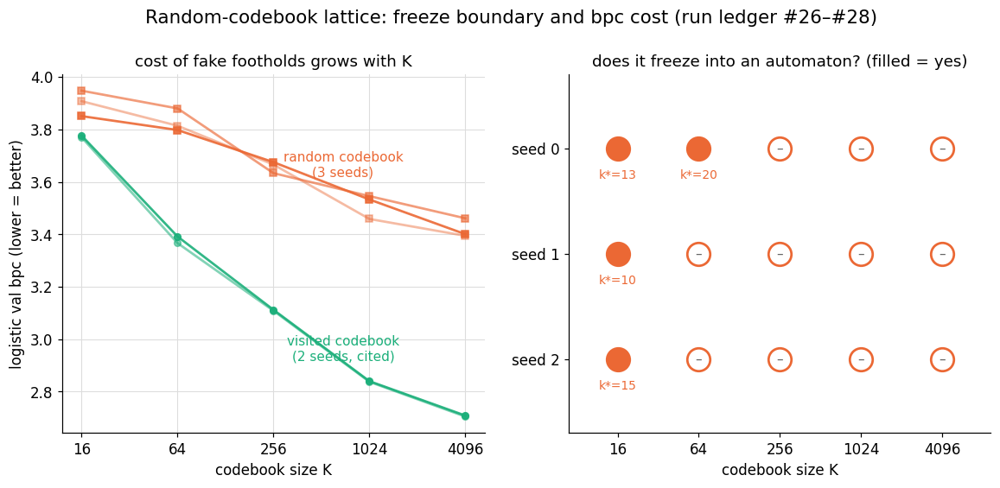

Random Codebooks Compile a Reservoir Only Below K ≈ 64
download whitepaper (pdf)
- registered 2026-08-11
- internal run log #26, #27, #28
- 3 seeds × 5 codebook sizes
- first-pass threshold corrected by replication
- promoted 2026-08-11
Abstract
A companion study showed that snapping a reservoir's state at each step to the nearest of K states it had actually visited compiles it into a finite-state automaton at every tested K from 16 to 4096: identical recent-character suffixes drive the system to identical states, a property termed suffix-determinism, and the shortest suffix length at which it holds is the freeze depth k*. This study asks whether the provenance of those codebook states matters, by changing one line: the codebook becomes K i.i.d. draws from Uniform(−1,1)1024 — points the reservoir's own dynamics never visit. Across three independent draws of reservoir weights and codebook, an arbitrary codebook still compiles the reservoir, but only below K≈64. Every seed froze at K=16 (k*=13/10/15); no seed froze at K ∈ {256, 1024, 4096} (9/9 cells); and K=64 is a genuine knife's-edge case — it froze in one seed of three, and that pass was a bare one, landing exactly at the tested suffix-depth ceiling. The first-pass headline result (a threshold between K=64 and K=256) did not survive replication in that location; the pre-registered branch corrected it one step earlier, to between K=16 and K=64. The prediction cost of a random codebook depends on K rather than being flat: it is near zero at K=16 (0.07–0.18 bits against matched visited-state codebooks) and 0.5–0.76 bits at K≥256, tracking a sharp decay in codebook utilization — at K=4096, only ~19–22% of random anchors are ever the nearest neighbor of any visited state, against 81% for codebooks of visited states.
Keywords reservoir computing · state quantization · finite-state automata · codebooks · nearest-neighbor partitions · replication · pre-registration
§1 The question
When the codebook-quantized reservoir froze into a finite automaton, the natural explanation was that the codebook consisted of states on the reservoir's own attractor, sampled from a warmup trajectory. An open-ended design brief put that explanation on trial: build the same system with a codebook of random points instead. If it freezes just as well, the reading that the construction depends on genuinely visited states is wrong, and any K-point partition of state space would have served. Nearest-neighbor quantization against a codebook is a classical construction [1], and extracting automata from recurrent networks by partitioning their state space has a literature of its own [2]; the question here is narrowly empirical: does this reservoir's compilation depend on where the anchors sit?
§2 Method
Identical to the visited-codebook system [3] (the program's reference sparse-tanh echo state network (ESN), N=1024, spectral radius ρ=0.8, sparse fan-in-10 recurrent matrix W, leak 1.0), with one line changed:
# visited codebook (the companion study): # K states sampled from an actual warmup trajectory # random codebook (this study): # K i.i.d. draws from Uniform(-1,1)^1024 codebook = rng.uniform(-1, 1, size=(K, N))
At N=1024 these anchors are geometrically far outside the reservoir's attractor: a random draw's squared norm concentrates near N/3 ≈ 341 (norm ≈ 18.5). Same five codebook sizes K ∈ {16, 64, 256, 1024, 4096}, same instruments — ridge and logistic validation bits per character (bpc); the suffix-determinism probe (T5 in the program's internal instrument numbering), which reports freeze depth k* as a function of suffix depth (tested to L=20); and cophenetic crispness — and the same text8 splits [4] (2M training characters), directly comparable to the archived visited-codebook numbers at matched K and matched seed. A cell freezes when identical recent k-character suffixes always map to the identical codebook state (suffix-determinism 1.0 at some finite k* ≤ 20); k* = None means full determinism was never reached within the tested depth, so the closed-loop dynamics are not a finite-state automaton over any window this probe tests.
§3 Pre-registered predictions
A 100k-character pilot run produced an unexpected result, disclosed before registration and folded into the wording: K=16 froze but K=256 did not — the opposite of the visited-codebook system's own pilot run, which froze at both. The first full run registered:
- RC1 (headline): k* finite at K=16 and K=64 but not at K ∈ {256, 1024, 4096}. Named alternative "a random codebook works just as well": finite k* at all five K. Named alternative "randomness always prevents freezing": k* = None at all five.
- RC2 (mechanism): wherever k* = None, codebook utilization (distinct states used ÷ K) sits markedly below the visited-codebook number at the same K.
- RC3 (cost): random-codebook logistic validation bpc is worse than matched-K visited-codebook numbers by ≥ 0.3 bits at every K.
The seed-1 rerun re-registered the same claims for a fresh draw, with the threshold's location explicitly at risk. The third-seed run pre-registered both promotion branches before its own K=64 outcome was known: T2 (K=16 freezes and K ≥ 256 does not, matching both prior seeds) plus K=64 freezing would promote "the threshold usually falls at K=64, seed-sensitively"; T2 plus K=64 not freezing would promote the mirror form — the boundary between K=16 and K=64, with K=64 an unstable boundary case. T2 failing would promote nothing and would require a denser K grid.
§4 Results
| K | k* (s0 / s1 / s2) | utilization (s0 / s1 / s2) | logistic val (s0 / s1 / s2) | visited logistic (s0 / s1) |
|---|---|---|---|---|
| 16 | 13 / 10 / 15 | 93.8% / 93.75% / 93.75% | 3.8508 / 3.9477 / 3.9077 | 3.7762 / 3.7695 |
| 64 | 20 (bare) / None / None | 78.1% / 87.5% / 84.4% | 3.7978 / 3.8802 / 3.8141 | 3.3916 / 3.3665 |
| 256 | None / None / None | 66.4% / 67.6% / 62.5% | 3.6753 / 3.6333 / 3.6660 | 3.1122 / 3.1085 |
| 1024 | None / None / None | 40.0% / 37.9% / 39.6% | 3.5329 / 3.5458 / 3.4587 | 2.8401 / 2.8376 |
| 4096 | None / None / None | 19.9% / 21.5% / 18.8% | 3.4007 / 3.4612 / 3.3944 | 2.7089 / 2.7050 |

Seed 0: RC1 was confirmed, exactly as the pilot run suggested. k* finite at K=16 (13) and K=64 — though the K=64 pass landed at exactly the L=20 depth ceiling, with none of the visited codebook's margin (k*=8 with 12 characters of headroom) — and None at K ≥ 256. RC2 was confirmed 3/3. RC3 was confirmed at four of five K but missed informatively at K=16, where the gap to the visited-state codebook is only 0.0746 bits: at the coarsest codebook, visited and random anchors cost almost the same.
Seed 1: the threshold moved. K=64 flipped to k* = None — the freezing boundary sat one full K-step earlier than at seed 0. This was the registered named-alternative scenario, treated as a registered claim missing informatively: the first-pass headline ("a threshold between K=64 and K=256") was not confirmed, no promotion was made, and a third seed was queued to decide. The K=16 cost gap roughly doubled (0.1782 bits) while staying well under the 0.3-bit line — "near zero" at seed 0 reads as "small" at seed 1.
Seed 2: the deciding pass. T2 held in all three seeds — 9/9 cells at K ≥ 256 never froze, K=16 froze every time — and K=64 again did not freeze, matching seed 1. The pre-registered mirror-image branch fired and promoted the corrected claim: the stable boundary sits between K=16 and K=64, and K=64 itself is seed-sensitive (froze 1 of 3, and that one a bare pass).
One anomaly, reported and not promoted. Utilization tracks freezing cleanly along the K axis (93.8% → ~19% as freezing fails), but at K=64 specifically the two seeds that did not freeze had higher utilization (87.5%, 84.4%) than the one seed that did (78.1%) — the opposite of the "more utilization → freezes more easily" pattern that holds everywhere else. Three draws are far too few to support promotion; the observation is recorded as an open question in the program's intake queue.
§5 Discussion
Where the anchors sit barely matters when there are few of them, and matters decisively when there are many. With 16 cells, an arbitrary partition of state space compiles the reservoir almost as readily as visited states do (k*=13/10/15 against the visited codebook's single digits) and costs 0.07–0.18 bits. By K≥256, a random codebook stops compiling at all within 20 characters of context and costs 0.5–0.76 bits. The mechanism is visible directly in the utilization numbers: geometrically arbitrary anchors are used less and less often as K grows — at K=4096 only about a fifth of them are ever the nearest neighbor of any visited state, against 81% for visited states — so a large K-point random codebook behaves like a much smaller effective codebook that is also badly placed.
The correction illustrates the pre-registration protocol working. The first-pass threshold location was wrong by a full step, and what caught it was the program's replication rule: a surprising headline does not enter the confirmed-findings record until an independent seed confirms it, and the deciding third run had both promotion branches written down before its outcome was known. What this study does not establish: why K=64 specifically is unstable (the utilization inversion is unexplained), and where the boundary would sit on a denser K grid — both named as open questions, not claims.
§6 References
- R. M. Gray, "Vector quantization," IEEE ASSP Magazine 1(2), 1984.
- G. Weiss, Y. Goldberg, E. Yahav, "Extracting automata from recurrent neural networks using queries and counterexamples," ICML 2018.
- H. Jaeger, "The 'echo state' approach to analysing and training recurrent neural networks," GMD Report 148, German National Research Center for Information Technology, 2001.
- M. Mahoney, "Large text compression benchmark" (text8), mattmahoney.net/dc/textdata.
§7 Provenance
- e2257f87 —
2026-08-11-caity-which-matters-more-real-footholds-or-jus: the design brief; 5 cells, seed 0 (internal run log #26). Registered before running, with the unexpected pilot result disclosed. RC1 confirmed ⇒ provisional; RC3's informative miss opened an intake record; replication automatically queued. - 968046b7 —
2026-08-11-goat-lattice-random-rerun1: seed 1, fresh reservoir and codebook draws (internal run log #27). The K=64 flip — threshold location not confirmed, no promotion, third seed queued per the replication rule. - 86bbc0f0 —
2026-08-11-goat-lattice-random-rerun2: seed 2, both promotion branches pre-registered (internal run log #28). T2 held 9/9 across all seeds; the mirror-image branch fired ⇒ promoted in the corrected form.
All claims judged strictly against the registered wording, misses included above; 3 seeds; replicated before publication. The visited-codebook comparators are cited from the companion study's runs (run log #16–#17), not rerun; a seed-2 visited-codebook pass was outside the registered scope. Internal designation: random footholds.